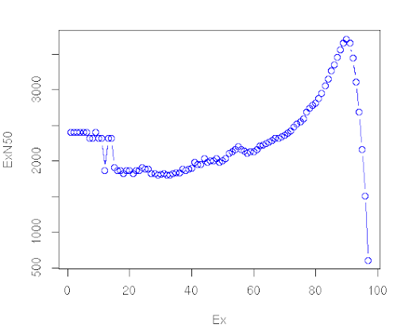

De novo transcriptome assembly, annotation, and differential expression analysis
Under Development!
This tutorial is not in its final state. The content may change a lot in the next months. Because of this status, it is also not listed in the topic pages.
 Anthony Bretaudeau
Anthony Bretaudeau Gildas Le Corguillé
Gildas Le Corguillé Erwan Corre
Erwan Corre Xi Liu
Xi LiuOverview
question Questionsobjectives Objectives
Which biological questions are addressed by the tutorial?
Which bioinformatics techniques are important to know for this type of data?
requirements Requirements
The learning objectives are the goals of the tutorial
They will be informed by your audience and will communicate to them and to yourself what you should focus on during the course
They are single sentences describing what a learner should be able to do once they have completed the tutorial
You can use Bloom’s Taxonomy to write effective learning objectives
- Introduction to Galaxy Analyses
- Sequence analysis
- Quality Control: slides slides - tutorial hands-on
- Mapping: slides slides - tutorial hands-on
time Time estimation: 3 hours
Supporting Materials
last_modification Last modification: Jan 6, 2021
Introduction
As a result of the development of novel sequencing technologies, the years between 2008 and 2012 saw a large drop in the cost of sequencing. Per megabase and genome, the cost dropped to 1/100,000th and 1/10,000th of the price, respectively. Prior to this, only transcriptomes of organisms that were of broad interest and utility to scientific research were sequenced; however, these developed in 2010s high-throughput sequencing (also called next-generation sequencing) technologies are both cost- and labor- effective, and the range of organisms studied via these methods is expanding.
Examining non-model organisms can provide novel insights into the mechanisms underlying the “diversity of fascinating morphological innovations” that have enabled the abundance of life on planet Earth. In animals and plants, the “innovations” that cannot be examined in common model organisms include mimicry, mutualism, parasitism, and asexual reproduction. De novo transcriptome assembly is often the preferred method to studying non-model organisms, since it is cheaper and easier than building a genome, and reference-based methods are not possible without an existing genome. The transcriptomes of these organisms can thus reveal novel proteins and their isoforms that are implicated in such unique biological phenomena.
Agenda
In this tutorial, we will cover:
- Read cleaning (20 minutes)
- Assembly (120 minutes - computing)
- Assembly assessment / cleaning
- Checking of the assembly statistics
- Remapping on the raw transcriptome
- Merge the mapping tables and compute normalizations
- Compute contig Ex90N50 statistic and Ex90 transcript count
- Transcriptome annotation completeness
- Filter low expression transcripts
- Checking of the assembly statistics after cleaning
- Annotation
- Differential Expression (DE) Analysis
Read cleaning (20 minutes)
Known sequencing biases:
- Unknown nucleotides (Ns)
- Bad quality nucleotides
- Hexamers biases (Illumina. Now corrected ?)
Why do we need to correct those?
- To remove a lot of sequencing errors (detrimental to the vast majority of assemblers)
- Because most de-bruijn graph based assemblers can’t handle unknown nucleotides
Get data
hands_on Hands-on: Data upload
Create a new history for this tutorial
tip Tip: Creating a new history
Click the new-history icon at the top of the history panel
If the new-history is missing:
- Click on the galaxy-gear icon (History options) on the top of the history panel
- Select the option Create New from the menu
- Import the 12
fq.gzinto aList of Pairscollection namedfastq_raw
- Option 1: from a shared data library (ask your instructor)
Option 2: from Zenodo using the URLs given below
https://zenodo.org/record/3541678/files/A1_left.fq.gz https://zenodo.org/record/3541678/files/A1_right.fq.gz https://zenodo.org/record/3541678/files/A2_left.fq.gz https://zenodo.org/record/3541678/files/A2_right.fq.gz https://zenodo.org/record/3541678/files/A3_left.fq.gz https://zenodo.org/record/3541678/files/A3_right.fq.gz https://zenodo.org/record/3541678/files/B1_left.fq.gz https://zenodo.org/record/3541678/files/B1_right.fq.gz https://zenodo.org/record/3541678/files/B2_left.fq.gz https://zenodo.org/record/3541678/files/B2_right.fq.gz https://zenodo.org/record/3541678/files/B3_left.fq.gz https://zenodo.org/record/3541678/files/B3_right.fq.gztip Tip: Importing data via links
- Copy the link location
Open the Galaxy Upload Manager (galaxy-upload on the top-right of the tool panel)
Click on Collection on the top
Click on Collection Type and select
List of Pairs- Select Paste/Fetch Data
Paste the link into the text field
Press Start
Click on Build when available
Enter a name for the collection
- fastq_raw
- Click on Create list (and wait a bit)
By default, Galaxy uses the URL as the name, so rename the files with a more useful name.
tip Tip: Importing data from a data library
As an alternative to uploading the data from a URL or your computer, the files may also have been made available from a shared data library:
Go into Shared data (top panel) then Data libraries
Find the correct folder (ask your instructor)
- Select the desired files
- Click on the To History button near the top and select as Datasets from the dropdown menu
- In the pop-up window, select the history you want to import the files to (or create a new one)
- Click on Import
- Rename the datasets
Check that the datatype
tip Tip: Changing the datatype
- Click on the galaxy-pencil pencil icon for the dataset to edit its attributes
- In the central panel, click on the galaxy-chart-select-data Datatypes tab on the top
- Select
datatypes- Click the Change datatype button
Add to each database a tag corresponding to …
tip Tip: Adding a tag
- Click on the dataset
- Click on galaxy-tags Edit dataset tags
Add a tag starting with
#Tags starting with
#will be automatically propagated to the outputs of tools using this dataset.- Check that the tag is appearing below the dataset name
Quality control
hands_on Hands-on: Task description
- FastQC tool with the following parameters:
- “Short read data from your current history”:
fastq_raw(collection)
Read cleaning with Trimmomatic
hands_on Hands-on: Task description
- Trimmomatic tool with the following parameters:
- “Single-end or paired-end reads?”:
Paired-end (as collection)- “Select FASTQ dataset collection with R1/R2 pair”:
fastq_raw- “Perform initial ILLUMINACLIP step?”:
Yes- “Adapter sequences to use”:
TruSeq3 (additional seqs) (paired-ended, for MiSeq and HiSeq)- In “Trimmomatic Operation”:
- param-repeat “Insert Trimmomatic Operation”
- “Select Trimmomatic operation to perform”:
Cut bases off end of a read, if below a threshold quality (TRAILING)- param-repeat “Insert Trimmomatic Operation”
- “Select Trimmomatic operation to perform”:
Cut bases off start of a read, if below a threshold quality (LEADING)- param-repeat “Insert Trimmomatic Operation”
- “Select Trimmomatic operation to perform”:
Sliding window trimming (SLIDINGWINDOW)- param-repeat “Insert Trimmomatic Operation”
- “Select Trimmomatic operation to perform”:
Drop reads with average quality lower than a specific level (AVGQUAL)
- “Minimum length of reads to be kept”:
25- param-repeat “Insert Trimmomatic Operation”
- “Select Trimmomatic operation to perform”:
Drop reads below a specified length (MINLEN)
- “Minimum length of reads to be kept”:
50- “Output trimmomatic log messages?”:
Yes- Rename the Dataset Collection
Trimmomatic on collection XX: paired->fastqc_cleanedcomment Comment
You can check the Trimmomatic log files to get the number of read before and after the cleaning
Input Read Pairs: 10000 Both Surviving: 8804 (88.04%) Forward Only Surviving: 491 (4.91%) Reverse Only Surviving: 456 (4.56%) Dropped: 249 (2.49%)tip Tip: Renaming a collection
- Click on the collection
- Click on the name of the collection at the top
- Change the name
- Press Enter
Quality control after cleaning
hands_on Hands-on: Task description
- FastQC tool with the following parameters:
- “Short read data from your current history”:
fastqc_cleaned(collection)
Assembly (120 minutes - computing)
Assembly with Trinity
hands_on Hands-on: Task description
- Trinity tool with the following parameters:
- “Are you pooling sequence datasets?”:
Yes
- “Paired or Single-end data?”:
Paired-end collection
- “Strand specific data”:
No- “Run in silico normalization of reads”:
No- In “Additional Options”:
- “Use the genome guided mode?”:
No- Rename the Trinity output
Trinity on data 52, data 51, and others: Assembled Transcripts->transcriptome_raw.fastatip Tip: Renaming a dataset
- Click on the galaxy-pencil pencil icon for the dataset to edit its attributes
- In the central panel, change the Name field
- Click the Save button
Assembly assessment / cleaning
Checking of the assembly statistics
hands_on Hands-on: Task description
- Trinity Statistics tool with the following parameters:
- “Trinity assembly”:
transcriptome_raw.fastacomment Comment
This step, even with this toy dataset, will take around 2 hours
Remapping on the raw transcriptome
hands_on Hands-on: Task description
- Align reads and estimate abundance tool with the following parameters:
- “Transcripts”:
transcriptome_raw.fasta- “Paired or Single-end data?”:
Paired
- “Left/Forward strand reads” ->
Multiple datasets
- Click on the Folder button at the right
- Type to Search:
left- Select the 6
Trimmomatic on ..._left.fq.gz- “Right/Reverse strand reads” ->
Multiple datasets
- Click on the Folder button at the right
- Type to Search:
right- Select the 6
Trimmomatic on ..._left.fq.gz- “Strand specific data”:
Yes- “Abundance estimation method”:
Salmon- In “Additional Options”:
- “Trinity assembly?”:
Yes- Rename the 6
* isoforms counts:(
- Check in the information panel (i icon) the lineage of your file (ex:
A1_left.fq.gz… )- Rename the datasets:
A1_raw,A2_raw,A3_raw,B1_raw,B2_raw,B3_raw.comment Comment
If you check at the Standard Error messages of your outputs. You can get the
Mapping rate
- Click on one dataset
- Click on the little i icon
- Click on Tool Standard Error: stderr
[2019-11-14 15:44:21.500] [jointLog] [info] Mapping rate = 44.4358%comment Comment
At this stage, you can now delete some useless datasets
Trimmomatic on collection XX: unpairedAlign reads and estimate abundance on *: genes countsNote that the dataset are just hidden. You can delete them permanently and make some room in the history options (the little wheel icon)
Merge the mapping tables and compute normalizations
hands_on Hands-on: Task description
- Build expression matrix tool with the following parameters:
- “Abundance estimates”:
A1_raw,A2_raw,A3_raw,B1_raw,B2_raw,B3_raw- “Abundance estimation method”:
Salmon
question Questions
What are the three tables?
solution Solution
estimated RNA-Seq fragment isoform counts (raw counts)`matrix of isoform TPM expression values (not cross-sample normalized)matrix of TMM-normalized expression values
Compute contig Ex90N50 statistic and Ex90 transcript count
hands_on Hands-on: Task description
- Compute contig Ex90N50 statistic and Ex90 transcript count tool with the following parameters:
- “Expression matrix”:
Build expression matrix: matrix of TMM-normalized expression values- “Transcripts”:
transcriptome_raw.fasta- Click on the visulization icon on the dataset
Compute contig Ex90N50 statistic and Ex90 transcript count: ExN50 statistics
- Scatterplot - Creates a 2D-scatterplot from tabular datapoints
- “X Column”: select the Columns
1- “Y Column”: select the Columns
2
What we get

What we should get with a real dataset
 (source)
Transcriptome annotation completeness
hands_on Hands-on: Task description
- Busco tool with the following parameters:
- “Sequence to analyse”:
transcriptome_raw.fasta- “Mode”:
transcriptome- “Lineage”:
eukaryota_odb9

Filter low expression transcripts
hands_on Hands-on: Task description
- Filter low expression transcripts tool with the following parameters:
- “Trinity assembly”:
transcriptome_raw.fasta- “Expression matrix”:
Build expression matrix: matrix of isoform TPM expression values (not cross-sample normalized)- “Minimum expression level required across any sample”:
1.0- “Isoform filtering method”:
Keep all isoforms above a minimum percent of dominant expression
- “Minimum percent of dominant isoform expression”:
1comment Comment
If you check at the Standard Error messages of your outputs. You can get the
Retainedrate
- Click on one dataset
- Click on the little i icon
- Click on Tool Standard Error: stderr
Retained 2096 / 2102 = 99.71% of total transcripts.- Rename the output
Filter low expression transcripts on data 42 and data 14: filtered low expression transcripts->transcriptome_filtered.fasta
Checking of the assembly statistics after cleaning
hands_on Hands-on: Task description
- Trinity Statistics tool with the following parameters:
- “Trinity assembly”:
transcriptome_filtered.fasta
Annotation
Generate gene to transcript map
hands_on Hands-on: Task description
- Generate gene to transcript map tool with the following parameters:
- “Trinity assembly”:
transcriptome_filtered.fasta
Peptide prediction
hands_on Hands-on: Task description
- TransDecoder tool with the following parameters:
- “Transcripts”:
transcriptome_filtered.fasta- In “Training Options”:
- “Select the training method”:
Train with the top longest ORFs
Similarity search
hands_on Hands-on: Task description
- Diamond tool with the following parameters:
- “What do you want to align?”:
Align amino acid query sequences (blastp)- “Input query file in FASTA or FASTQ format”:
TransDecoder on data XXX: pep- “Select a reference database”:
Uniprot Swissprot- “Format of output file”:
BLAST Tabular- In “Method to restrict the number of hits?”:
Maximum number of target sequences
- “The maximum number of target sequence per query to report alignments for”:
1- Rename the Diamond output
Diamond on data XXX->Diamond (blastp)- Diamond tool with the following parameters:
- “What do you want to align?”:
Align DNA query sequences (blastx)- “Input query file in FASTA or FASTQ format”:
transcriptome_filtered.fasta- “Select a reference database”:
Uniprot Swissprot- “Format of output file”:
BLAST Tabular- In “Method to restrict the number of hits?”:
Maximum number of target sequences
- “The maximum number of target sequence per query to report alignments for”:
1- Rename the Diamond output
Diamond on data XXX->Diamond (blastx)comment Comment
Note that you can both use Diamond tool or the NCBI BLAST+ blastp tool and NCBI BLAST+ blast tool
Find signal peptides
hands_on Hands-on: Task description
- SignalP 3.0 tool with the following parameters:
- “Fasta file of protein sequences”:
TransDecoder on data XXX: pep
Find transmembrane domains
hands_on Hands-on: Task description
- TMHMM 2.0 tool with the following parameters:
- “FASTA file of protein sequences”:
TransDecoder on data XXX: pep
Search again profile database
hands_on Hands-on: Task description
- hmmscan tool with the following parameters:
- “Sequence file”:
TransDecoder on data XXX: pep
Transcriptome annotation using Trinotate
hands_on Hands-on: Task description
- Trinotate tool with the following parameters:
- “Transcripts”:
transcriptome_filtered.fasta- “Peptides”:
TransDecoder on data XXX: pep- “Genes to transcripts map”:
Generate gene to transcript map on data XXX: Genes to transcripts map- “BLASTP: Peptides vs Uniprot.SwissProt”:
Diamond (blastp)- “BLASTX: Transcripts vs Uniprot.SwissProt”:
Diamond (blastx)- “HMMER hmmscan: Peptides vs PFAM”:
Table of per-domain hits from HMM matches of TransDecoder on data XXX: pep against the profile database- “TMHMM on Peptides”:
TMHMM results- “SignalP on Peptides”:
SignalP euk results- “Let Galaxy downloading the Trinotate Pre-generated Resource SQLite database”:
Yes
Differential Expression (DE) Analysis
Remapping on the filtered transcriptome using
hands_on Hands-on: Task description
- Align reads and estimate abundance tool with the following parameters:
- “Transcripts”:
transcriptome_filtered.fasta- “Paired or Single-end data?”:
Paired
- “Left/Forward strand reads” ->
Multiple datasets
- Click on the Folder button at the right
- Type to Search:
left- Select the 6
Trimmomatic on ..._left.fq.gz- “Right/Reverse strand reads” ->
Multiple datasets
- Click on the Folder button at the right
- Type to Search:
right- Select the 6
Trimmomatic on ..._left.fq.gz- “Strand specific data”:
Yes- “Abundance estimation method”:
Salmon- In “Additional Options”:
- “Trinity assembly?”:
Yes- Rename the 6
* isoforms counts:(
- Check in the information panel (i icon) the lineage of your file (ex:
A1_left.fq.gz… )- Rename the datasets:
A1,A2,A3,B1,B2,B3.comment Comment
If you check at the Standard Error messages of your outputs. You can get the
Mapping rate
- Click on one dataset
- Click on the little i icon
- Click on Tool Standard Error: stderr
[2019-11-14 15:44:21.500] [jointLog] [info] Mapping rate = 44.4358%comment Comment
At this stage, you can now delete some useless datasets
Align reads and estimate abundance on *: genes countsNote that the dataset are just hidden. You can delete them permanently and make some room in the history options (the little wheel icon)
Merge the mapping tables and compute a TMM normalization
hands_on Hands-on: Task description
- Build expression matrix tool with the following parameters:
- “Abundance estimates”:
A1,A2,A3,B1,B2,B3- “Abundance estimation method”:
Salmon- Describe samples and replicates tool with the following parameters:
- “Samples”
- “1: Samples”:
- “Full sample name”:
A1- “Condition”:
A- “2: Samples”:
- “Full sample name”:
A2- “Condition”:
A- …:
- “6: Samples”:
- “Full sample name”:
B3- “Condition”:
B
RNASeq samples quality check
hands_on Hands-on: Task description
- RNASeq samples quality check tool with the following parameters:
- “Expression matrix”:
Build expression matrix: estimated RNA-Seq fragment isoform counts (raw counts)- “Samples description”:
Describe samples
Differential expression analysis
hands_on Hands-on: Task description
- Differential expression analysis tool with the following parameters:
- “Expression matrix”:
Build expression matrix: estimated RNA-Seq fragment isoform counts (raw counts)- “Sample description”:
Describe samples(the last one)- “Differential analysis method”:
DESeq2
Extract and cluster differentially expressed transcripts
hands_on Hands-on: Task description
- Extract and cluster differentially expressed transcripts tool with the following parameters:
- In “Additional Options”:
- “Expression matrix”:
Build expression matrix: estimated RNA-Seq fragment isoform counts (raw counts)- “Sample description”:
Describe samples- “Differential expression results”:
Differential expression results on data XXX and data XXX- “p-value cutoff for FDR”:
1- “Run GO enrichment analysis”:
Nocomment Comment
“p-value cutoff for FDR”:
1Don’t do this at home! It’s because we have a Toy Dataset. The cutoff should be around0.001
Partition genes into expression clusters
hands_on Hands-on: Task description
- Partition genes into expression clusters tool with the following parameters:
- “RData file”:
Extract and cluster differentially expressed transcripts: RData file- “Method for partitioning genes into clusters”:
Cut tree based on x percent of max(height) of tree
Conclusion
Sum up the tutorial and the key takeaways here. We encourage adding an overview image of the pipeline used.
keypoints Key points
The take-home messages
They will appear at the end of the tutorial
Useful literature
Further information, including links to documentation and original publications, regarding the tools, analysis techniques and the interpretation of results described in this tutorial can be found here.
Feedback
Did you use this material as an instructor? Feel free to give us feedback on how it went.

Citing this Tutorial
- Anthony Bretaudeau, Gildas Le Corguillé, Erwan Corre, Xi Liu, 2021 De novo transcriptome assembly, annotation, and differential expression analysis (Galaxy Training Materials). /training-material/topics/transcriptomics/tutorials/full-de-novo/tutorial.html Online; accessed TODAY
- Batut et al., 2018 Community-Driven Data Analysis Training for Biology Cell Systems 10.1016/j.cels.2018.05.012
details BibTeX
@misc{transcriptomics-full-de-novo, author = "Anthony Bretaudeau and Gildas Le Corguillé and Erwan Corre and Xi Liu", title = "De novo transcriptome assembly, annotation, and differential expression analysis (Galaxy Training Materials)", year = "2021", month = "01", day = "06" url = "\url{/training-material/topics/transcriptomics/tutorials/full-de-novo/tutorial.html}", note = "[Online; accessed TODAY]" } @article{Batut_2018, doi = {10.1016/j.cels.2018.05.012}, url = {https://doi.org/10.1016%2Fj.cels.2018.05.012}, year = 2018, month = {jun}, publisher = {Elsevier {BV}}, volume = {6}, number = {6}, pages = {752--758.e1}, author = {B{\'{e}}r{\'{e}}nice Batut and Saskia Hiltemann and Andrea Bagnacani and Dannon Baker and Vivek Bhardwaj and Clemens Blank and Anthony Bretaudeau and Loraine Brillet-Gu{\'{e}}guen and Martin {\v{C}}ech and John Chilton and Dave Clements and Olivia Doppelt-Azeroual and Anika Erxleben and Mallory Ann Freeberg and Simon Gladman and Youri Hoogstrate and Hans-Rudolf Hotz and Torsten Houwaart and Pratik Jagtap and Delphine Larivi{\`{e}}re and Gildas Le Corguill{\'{e}} and Thomas Manke and Fabien Mareuil and Fidel Ram{\'{\i}}rez and Devon Ryan and Florian Christoph Sigloch and Nicola Soranzo and Joachim Wolff and Pavankumar Videm and Markus Wolfien and Aisanjiang Wubuli and Dilmurat Yusuf and James Taylor and Rolf Backofen and Anton Nekrutenko and Björn Grüning}, title = {Community-Driven Data Analysis Training for Biology}, journal = {Cell Systems} }